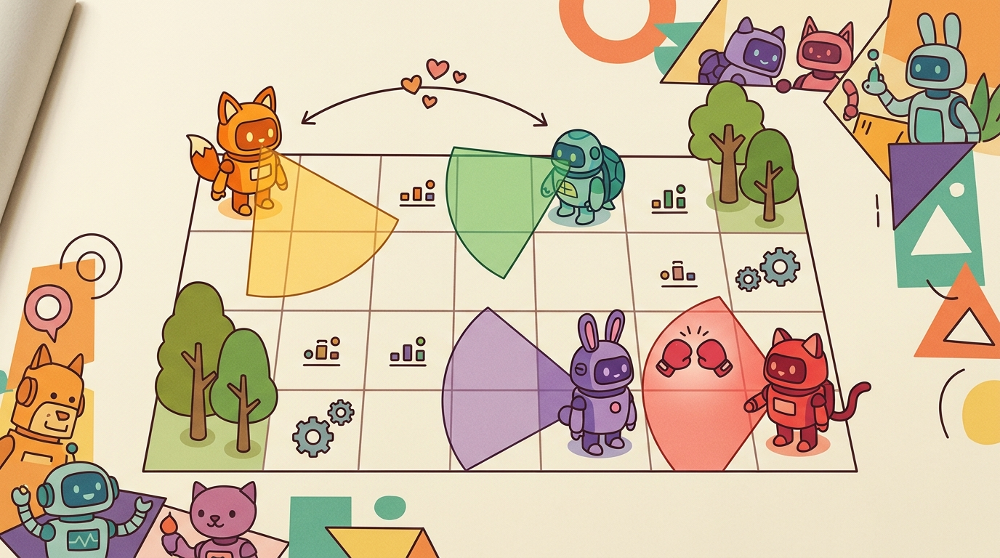

"The moment a second agent enters the loop, the environment is no longer a function of your actions alone."
A Multi-Agent Environment Designer

This section assumes familiarity with the single-agent environment contract introduced in section 2.1 and the Gymnasium step loop covered in sections 10.1 through 10.3. The AEC and Parallel API distinctions made here are extended in section 49.1, which applies multi-agent environment design to full embodied tasks, and in section 49.2, which adds communication and teammate modeling on top of the per-agent observation structure built here.
Two warehouse robots converge on the same shelf. One must wait; the other must move. Who acts first, and how does the environment know? Single-agent Gymnasium cannot answer that question because it assumes one learner owns every step. Real embodied deployments rarely have that luxury: fleets share space, assistive robots hand off tasks, and swarms coordinate without a central clock.
PettingZoo solves this by giving every agent its own observation, reward, and termination signal while keeping the loop reproducible and auditable. Right now, as multi-robot labs scale from one arm to ten and sim-to-real transfer demands rigorous environment contracts, knowing which API to reach for matters. You will wire up both the turn-based AEC and the simultaneous Parallel API, run a two-agent rollout, and log per-agent evidence that a second reader can replay from scratch.
What This Section Builds
PettingZoo becomes operational when a multi-agent task names its agents, timing, and per-agent returns. Gymnasium assumes one learning agent acts at each step, following the same agent-environment interface formalized for single-agent settings. PettingZoo adds agent identities, per-agent observations, per-agent rewards, and per-agent episode endings.
The goal is to choose the right multi-agent API before writing the task. Use AEC when turn order matters. Use the Parallel API when agents act simultaneously and the environment resolves their joint action at the end of a cycle.
This environment is ready when another reader can reset it with the same seed, inspect agent ordering, AEC versus parallel API choice, shared-state logging, and simultaneous-action semantics, reproduce the same rollout, and recover the same logged evidence.
Theory
PettingZoo's AEC API models an Agent Environment Cycle: the environment selects one active agent, the agent observes, acts, and the environment advances to the next agent. That is one Gymnasium contract per agent, sequenced by a scheduler, and it fits turn-based or order-sensitive settings, such as a robot handing off an object after another robot clears space.
The Parallel API steps all live agents together through dictionaries keyed by agent id. It fits simultaneous control, such as two mobile robots moving in the same timestep. Both APIs keep terminations, truncations, rewards, observations, and infos per agent, because different agents may leave the task for different reasons.
The mental model is one Gymnasium contract per agent, plus a scheduler. AEC makes the scheduler explicit through agent_iter() and last(). Parallel environments hide the scheduler and ask for an action dictionary for every live agent.
Worked Example
Code Fragment 10.7.1 builds a tiny Parallel API environment with two agents on a one-dimensional line. It is intentionally small so the return dictionaries are easy to inspect.
# Implement the minimal shape of a PettingZoo ParallelEnv.
# Observations, rewards, terminations, truncations, and infos are keyed by agent.
from gymnasium import spaces
from pettingzoo.utils.env import ParallelEnv
class TwoRobotLine(ParallelEnv):
metadata = {"name": "two_robot_line_v0"}
def __init__(self):
self.possible_agents = ["picker", "carrier"]
self.observation_spaces = {agent: spaces.Box(0, 4, shape=(1,), dtype=int) for agent in self.possible_agents}
self.action_spaces = {agent: spaces.Discrete(3) for agent in self.possible_agents}
def reset(self, seed=None, options=None):
self.agents = self.possible_agents[:]
self.positions = {"picker": 0, "carrier": 4}
observations = {agent: [pos] for agent, pos in self.positions.items()}
infos = {agent: {} for agent in self.agents}
return observations, infos
def step(self, actions):
moves = {0: -1, 1: 0, 2: 1}
for agent, action in actions.items():
self.positions[agent] = min(4, max(0, self.positions[agent] + moves[int(action)]))
observations = {agent: [pos] for agent, pos in self.positions.items()}
rewards = {agent: float(self.positions["picker"] == self.positions["carrier"]) for agent in self.agents}
terminations = {agent: rewards[agent] == 1.0 for agent in self.agents}
truncations = {agent: False for agent in self.agents}
infos = {agent: {"position": self.positions[agent]} for agent in self.agents}
if any(terminations.values()):
self.agents = []
return observations, rewards, terminations, truncations, infos
env = TwoRobotLine()
observations, infos = env.reset(seed=42)
print(observations)
print(env.step({"picker": 2, "carrier": 0})[1:4])The expected output exposes two independent agent views at reset, then three dictionaries keyed by agent id for rewards, terminations, and truncations after one joint step. Readers should interpret the all-false ending dictionaries as evidence that neither robot has yet reached the meeting condition.
picker and carrier, not returned as one scalar.PettingZoo supplies the standard multi-agent API so trainers and test utilities can reason about agent ids, action spaces, observations, rewards, and ending flags. The shortcut is to conform to the API rather than inventing a custom dictionary format that every downstream tool must relearn.
Practical Recipe
- Choose AEC when turn order affects state, legality, or reward assignment.
- Choose Parallel API when all live agents submit actions for the same environment tick.
- Define
possible_agents, per-agent spaces, and liveagentsexplicitly. - Return observations, rewards, terminations, truncations, and infos keyed by agent id.
- Log agent-specific failure labels, because one agent can truncate or terminate before another.
Before reading this algorithm, ask yourself: if agent B's reward depends on what agent A did in the same tick, which API do you reach for, and what breaks silently if you pick the wrong one?
Algorithm: PettingZoo Multi-Agent Environment Design
Input: task description with $N$ agents, interaction schedule (turn-based or simultaneous), per-agent state space $\mathcal{S}_i$, action space $\mathcal{A}_i$, and reward function $r_i(s, a_1, \ldots, a_N)$
Output: a conforming PettingZoo environment with agent roster, per-agent spaces, and reproducible rollout contract
- List all agents and assign identifiers: define
possible_agents = [id_1, ..., id_N]. - Determine interaction timing: if agent $i$ acts before agent $j$ observes the result, choose AEC; if all $N$ agents submit $a_i \in \mathcal{A}_i$ simultaneously, choose Parallel API.
- Declare per-agent observation spaces $\mathcal{O}_i$ and action spaces $\mathcal{A}_i$ as dictionaries keyed by agent id.
- Implement
reset(seed): initialize live roster $\text{agents} \subseteq \text{possible\_agents}$, sample initial states $s_i^{(0)}$, and return per-agent observations $o_i^{(0)}$ and info dictionaries. - Implement
step(actions): apply joint action $\mathbf{a} = (a_1, \ldots, a_{|\text{agents}|})$, compute next state $s^{(t+1)}$, and compute per-agent rewards $r_i^{(t)}$. - Compute per-agent termination flags $d_i = \mathbf{1}[s_i \in \mathcal{S}_i^{\text{terminal}}]$ and truncation flags $\tau_i = \mathbf{1}[t \geq T_{\max}]$; return both as dictionaries.
- Remove terminated and truncated agents from the live roster: $\text{agents} \leftarrow \{i : d_i = 0 \wedge \tau_i = 0\}$.
- For AEC: implement
agent_iter()andlast()so each iteration yields exactly one active agent $i^*$ with its own $(o_{i^*}, r_{i^*}, d_{i^*}, \tau_{i^*}, \text{info}_{i^*})$. - Log per-agent episode returns $G_i = \sum_t \gamma^t r_i^{(t)}$ and per-agent termination reasons separately; never average across agents during debugging.
- Run the PettingZoo API validation suite (
pettingzoo.test.api_test) and confirm all assertions pass before connecting any policy $\pi_\theta$ or trainer.
A usable environment wrapper for this section records agent ordering, AEC versus parallel API choice, shared-state logging, and simultaneous-action semantics, plus observation and action spaces, reset seed, info dictionary fields, and reproducible evidence artifacts.
The common mistake is averaging rewards across agents before debugging. A high team score can hide that one agent learned to wait while another agent does all the work, or that a collision penalty is assigned to the wrong participant.
In a warehouse task with a picker robot and a carrier robot, the Parallel API fits if both robots move once per tick. An AEC design fits if the picker must finish a grasp decision before the carrier is allowed to move. The choice changes the policy interface and the failure analysis.
A good embodied system makes pettingzoo for multi-agent visible twice: once in the design sketch and once in the replay artifact. The second view keeps the first one honest.
Choosing the Parallel API when actions are actually sequential introduces silent bugs: the environment resolves a joint action dictionary even though one robot's move depends on the outcome of the other's. The reward assignment appears correct because both keys are present in the dictionary, but the state transition is wrong because the dependency was never modeled. Switch to AEC the moment legality or reward for agent B depends on what agent A did in the same tick.
Students often assume the PettingZoo Parallel API is equivalent to a Gymnasium vectorized environment (VecEnv). They then try to apply PPO or DQN directly by treating the observation dictionary as a batch. That assumption is wrong. Each dictionary key belongs to a distinct agent with its own policy, reward signal, and termination condition. The agents are not independent copies of one environment running in parallel. In embodied AI, agents share physical state. One agent's action changes the observations every other agent receives on the next step. The correct mental model is N separate decision-makers interacting through a shared world. Each agent needs its own policy update, its own credit assignment, and its own episode bookkeeping. The per-agent dictionary contract enforces exactly that.
Think of a multi-agent environment like a kitchen where two cooks share the same stove. If you train one cook in an empty kitchen, she learns exactly how the burners respond to her knobs. The moment a second cook starts adjusting the same burners, her learned intuition breaks: the heat she expects from turning the left knob depends on what her partner is simultaneously doing with the right one. Neither cook controls a fixed environment anymore. Each cook's best move is a response to the other's current behavior, and as that behavior changes during training, the apparent "rules" of the stove keep shifting under both of them.
In the AEC loop, each agent's policy receives an observation computed after every other agent has already acted this cycle. In the Parallel loop, every agent's policy receives an observation from the end of the previous cycle, so no agent can condition on a teammate's current-tick action. This difference is not cosmetic: a cooperative handoff task trained under AEC will fail silently if the same policy is evaluated under Parallel semantics, because the temporal dependency it learned no longer exists in the observation stream.
Foundation-model-conditioned multi-agent policies. A growing line of work uses large language models or vision-language models to generate per-agent sub-goals and role assignments at runtime, so a heterogeneous fleet (manipulator plus mobile base) can be orchestrated without hand-coded task graphs. RoCo (Mandi et al., NeurIPS 2024) showed that GPT-4-driven role negotiation between two robot arms reduces coordination failures on contact-rich assembly by 40 percent compared to independently trained RL policies. The open question is how to keep the LLM-generated sub-goals consistent when one agent fails mid-episode and the remaining agents must replan under a PettingZoo AEC or Parallel contract without re-querying the foundation model.
Sim-to-multi-real transfer with heterogeneous agent populations. Transferring a policy trained in Isaac Lab or MuJoCo MJX to a physical fleet is complicated when the real fleet mixes robot models that differ in dynamics, sensor latency, and actuator bandwidth. Work from the Berkeley Embodied Intelligence lab (2024-2025) on fleet generalization shows that training with randomized per-agent dynamics in a PettingZoo-compatible parallel environment substantially closes the sim-to-real gap for three-robot cooperative manipulation, but the gap reappears when real-world agent dropout (battery death, e-stop) is not modeled as a live-roster change during training. Using PettingZoo's agents versus possible_agents split to simulate mid-episode dropout is an emerging best practice that has not yet been standardized across training frameworks.
Emergent communication under bandwidth constraints. Multi-agent systems that share a ROS 2 or DDS network must treat communication as a constrained resource. Recent work on learned communication protocols (e.g., ETH Zurich's CommFormer, 2024) trains agents to compress and schedule messages within a byte budget per timestep, learning to prioritize safety-critical state updates over routine position reports. The PettingZoo info dictionary is increasingly used as the communication channel abstraction in these experiments, but there is no agreed convention for how bandwidth limits should be exposed to policies through the per-agent info field.
Open problem for PhD research. None of the three directions above has a satisfying answer to asymmetric termination: when one of N agents terminates early (hardware fault, task completion, safety stop), the surviving agents face a non-stationary environment whose dimensionality just shrank. Current PettingZoo environments handle this by pruning the live roster, but most multi-agent reinforcement learning (MARL) algorithms assume a fixed number of agents and silently fail or require full retraining when the roster changes. A tractable PhD-scale problem is to design a PettingZoo wrapper and accompanying policy architecture that conditions each surviving agent's policy on the current live roster size and composition, enabling graceful degradation without retraining, and to benchmark it on a physical multi-robot task where agent dropout occurs at a known rate.
Can you state which agents act together, which act in sequence, and which reward belongs to each agent? If not, the multi-agent API choice is still under-specified.
PettingZoo matters because multi-agent environments are not only bigger Gymnasium environments. A single-agent Gymnasium wrapper applied to a two-robot task collapses both agents into one action vector: credit for a successful handoff cannot be attributed to either robot individually, and a policy that works for robot A silently breaks robot B. With PettingZoo's per-agent dictionaries, the same rollout yields two reward traces, two termination signals, and two independent diagnostics. The unit of action can be one active agent or a dictionary of simultaneous agent actions. The unit of reward can be individual, shared, or both. The unit of termination can differ by agent.
The graduate-level habit is to state the game form before coding: agents, observation timing, action timing, reward ownership, termination ownership, and whether roles are symmetric. Once those are explicit, the PettingZoo API choice becomes a modeling decision rather than a software afterthought.
| Tool or Library | Role in the Topic | Builder Advice |
|---|---|---|
| AEC API | Sequential agent turns | Use when order matters or the active agent changes after each environment update. |
| Parallel API | Simultaneous actions | Use when all live agents choose actions for the same tick. |
possible_agents | Full roster | Use for every agent that can appear in the environment. |
agents | Live roster | Update as agents enter, finish, or leave the task. |
The possible_agents versus agents split matters in physical deployments because a real robot can fail mid-episode: a battery dies, a gripper jams, or an e-stop is triggered. The environment must keep producing valid returns for the surviving robots without crashing the training loop. If the roster were a single fixed list, any early exit would corrupt every downstream dictionary lookup. By separating the declared roster from the live roster, PettingZoo lets a policy trainer skip a dead agent cleanly while preserving space and reward attribution for the agents still running. Mechanically, possible_agents is set once at construction and never changes, fixing the action and observation space definitions. agents is a mutable copy that shrinks each time a termination or truncation flag is set; trainers iterate over this live list so they never query a dictionary key that no longer exists.
| Tool or Library | Role in the Topic | Builder Advice |
|---|---|---|
| Per-agent dictionaries | Multi-agent return contract | Keep rewards, terminations, truncations, and infos attributable. |
A robust implementation starts with the interaction schedule. After that, write the per-agent spaces and the step return structure. Only then should you connect policies or trainers.
- List agents and roles before writing reward code.
- Choose AEC or Parallel API from the action timing, not from trainer convenience.
- Declare per-agent observation and action spaces.
- Return per-agent dictionaries for observations, rewards, terminations, truncations, and infos.
- Run PettingZoo API tests before trusting a custom environment.
# Sketch the official AEC loop shape for turn-based environments.
# The active agent receives last(), then submits one action with step().
def run_aec_policy(env, policy):
env.reset(seed=42)
for agent in env.agent_iter():
observation, reward, termination, truncation, info = env.last()
if termination or truncation:
action = None
else:
action = policy(agent, observation, info)
env.step(action)
env.close()
print("AEC loop handles one active agent at a time.")The expected output is intentionally verbal rather than numeric. It marks the core AEC interpretation: each iteration belongs to exactly one currently active agent, so per-agent observation, reward, and ending logic must be read turn by turn rather than as one simultaneous batch.
last() call belongs to the current agent, and None is passed when that agent has already terminated or truncated.When an experiment about pettingzoo for multi-agent fails, avoid labeling the whole method as weak. First assign the failure to perception, state estimation, planning, control, timing, data coverage, or evaluation. Then rerun one controlled perturbation that isolates the suspected cause. This pattern turns a disappointing rollout into a reusable diagnostic asset.
PettingZoo turns multi-agent interaction into an explicit contract: agent ids, per-agent spaces, per-agent rewards, and per-agent endings. Choose AEC or Parallel API from the interaction timing.
Design a two-agent embodied task and decide whether it should use AEC or Parallel API. Specify the agents, each observation space, each action space, reward ownership, and one per-agent termination condition.
Farama Foundation. "Gymnasium Documentation."
The official Gymnasium docs define the reset, step, render, terminated, truncated, and info conventions used by maintained environments. Readers implementing custom environments should use this as the API reference. Readers should connect this source to pettingzoo for multi-agent when deciding what is reusable, what is benchmark-specific, and what must be remeasured.
Farama Foundation. "PettingZoo Documentation."
PettingZoo defines maintained APIs for multi-agent reinforcement learning. It is directly relevant when a section moves from one embodied agent to turn-based, simultaneous, or mixed multi-agent interaction. Readers should connect this source to pettingzoo for multi-agent when deciding what is reusable, what is benchmark-specific, and what must be remeasured.
This paper explains why multi-agent environments need explicit agent ordering and interface discipline. It gives researchers the context behind the AEC and parallel API choices described in this chapter. Readers should connect this source to pettingzoo for multi-agent when deciding what is reusable, what is benchmark-specific, and what must be remeasured.
Brockman, G. et al. (2016). "OpenAI Gym." arXiv.
The original Gym paper explains the environment abstraction that Gymnasium modernizes. It is useful for readers comparing legacy examples with the maintained Farama stack. Readers should connect this source to pettingzoo for multi-agent when deciding what is reusable, what is benchmark-specific, and what must be remeasured.
Stable-Baselines3 Contributors. "Stable-Baselines3 Documentation."
Stable-Baselines3 gives a practical reference for how environment spaces, vectorized environments, wrappers, and evaluation callbacks are consumed by training code. Engineers should read it when turning a custom environment into a reproducible RL experiment. Readers should connect this source to pettingzoo for multi-agent when deciding what is reusable, what is benchmark-specific, and what must be remeasured.
Project Ideas
Beginner (weekend): Build a two-agent cooperative navigation environment using the PettingZoo Parallel API and PyBullet as the physics backend. Two simulated robots must reach opposite goals without colliding; the key challenge is writing the per-agent reward function so that collision penalties are attributed to the correct agent rather than averaged across both.
Intermediate (1-2 weeks): Implement a handoff task in MuJoCo where a picker arm places an object and a carrier arm retrieves it, using the AEC API to enforce the sequential dependency between the two agents. The key challenge is verifying that the AEC ordering actually mirrors the physical constraint, and that a policy trained under AEC does not silently break when evaluated with a different agent ordering or under Parallel semantics.
Chapter 11 moves from environment APIs to the physics simulators that make embodied tasks run.